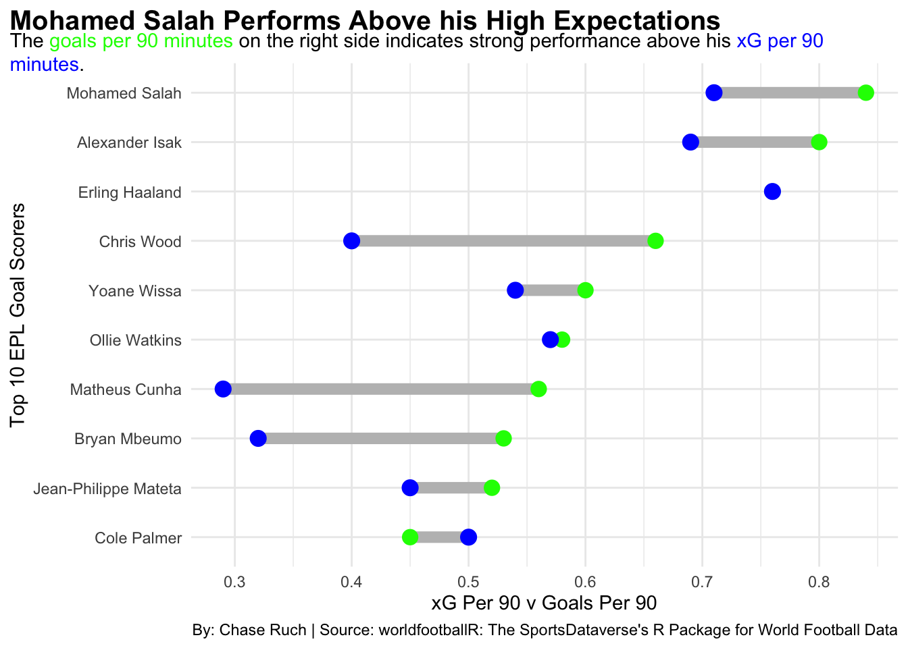
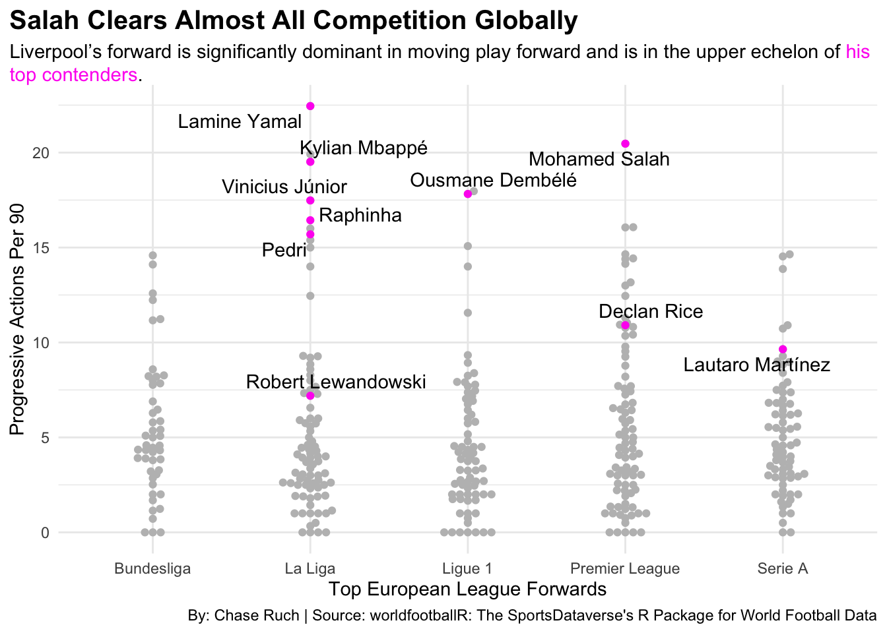

Do the Statistics Prove Mohamed Salah as a Worthy Ballon D’or Winner?
soccer
europe
salah
Author
Chase Ruch
Published
May 4, 2025
Arne Slot, Liverpool’s first-year manager, broke Manchester City’s four-year Premier League title winning streak. The Dutch gaffer needed more than his tactical prowess to get his team to the crucial 82 points for the title.
Egyptian winger Mohamed Salah struggled to find form at five total clubs over the span of seven years. He blossomed late in 2017 at Liverpool and never looked back.
Mohamed Salah, a two-time EPL winner and hoisted the UEFA Champions League trophy once, never came relatively close to a finalist position of the Ballon D’or. The trophy is decided yearly by the France Football magazine and is the most prestigious in world football in proclaiming the best player of the year.
Year after year, the winger was exceptionally reliable in keeping Liverpool in the mix for both domestic and European title clashes. This year, though, Salah hit the highest gear of his entire professional career. As of the publishing of this article, he sits at a career high 46 goal contributions. Viewers expect him to notch a goal (and an assist) practically every game.
The Premier League is commonly the most competitive league in “the big five” European leagues. Teams generally stay within punching distance game in and game out. Lower level teams are not farmed of points from top level giants like Real Madrid, F.C. Barcelona, PSG and Bayern Munich.
So if the league is so competitive, Salah has to really stand out above the rest to gain traction to the coveted prize.
Code
library(tidyverse)library(worldfootballR)big5_players <-fb_big5_advanced_season_stats(season_end_year=c(2025), stat_type="standard", team_or_player="player")prem <- big5_players |>filter(Comp =="Premier League")premscorers <- prem |>filter(Gls >13)library(ggalt)library(ggtext)ggplot() +geom_dumbbell(data=premscorers, aes(y=reorder(Player, Gls_Per), x=Gls_Per, xend=xG_Per),size =3,colour ="grey",colour_x ="green",colour_xend ="blue") +theme_minimal() +labs(title="Mohamed Salah Performs Above his High Expectations", subtitle ="The <span style = 'color:green;'>goals per 90 minutes</span> on the right side indicates strong performance above his <span style = 'color:blue;'>xG per 90 minutes</span>.",x="xG Per 90 v Goals Per 90",y="Top 10 EPL Goal Scorers",caption="By: Chase Ruch | Source: worldfootballR: The SportsDataverse's R Package for World Football Data" ) +theme(plot.subtitle =element_textbox_simple() ) +theme(plot.title =element_text(size =15, face ="bold"),plot.title.position ="plot")

Salah is performing above the expectations of Erling Haaland when they both get their goal-scoring opportunities. For context, Haaland holds the record for most goals in a single EPL season at 36.
Mohamed does much more than get opportunities and convert. He also racks up assists and feeds players goals with high technical ability.
Ballon D’or is not for a few more months, but betting odds from all of the top sportsbooks already have a consensus top 10 to wager on. Lots of players track some buzz from their fan bases like Raphinia and Ousmane Dembele.
Salah has high expectations already set, but so does this field of players who are most likely to take home the trophy.
Code
ballonlist <- big5_players |>c("Lamine Yamal", "Raphinha", "Ousmane Dembélé", "Mohamed Salah", "Pedri", "Robert Lewandowski", "Lautaro Martínez", "Declan Rice", "Kylian Mbappé", "Vinicius Júnior")ballon <- big5_players |>filter(Player %in% ballonlist)library(gt)ballonxg <- ballon |>mutate(GAexpected = xG_Expected + xAG_Expected) |>mutate(xG_diff = (Gls+Ast) - GAexpected) |>rename("G_A"="G+A") |>select(Player, Squad, G_A, GAexpected, xG_diff) |>arrange(desc(xG_diff))ballonxg |>gt() |>cols_label(G_A ="Goals and Assists",GAexpected ="Expected Total",xG_diff ="Difference" ) |>tab_header(title ="Salah Dominates the Ballon D'or Favorites",subtitle ="The Egyptian makes a good resume to win the prestigious award compared to the potential field." ) |>tab_style(style =cell_text(color ="black", weight ="bold", align ="left"),locations =cells_title("title") ) |>tab_style(style =cell_text(color ="black", align ="left"),locations =cells_title("subtitle") ) |>tab_source_note(source_note =md("**By:** Chase Ruch | **Source:** worldfootballR: The SportsDataverse's R Package for World Football Data") ) |>tab_style(locations =cells_column_labels(columns =everything()),style =list(cell_borders(sides ="bottom", weight =px(3)),cell_text(weight ="bold", size=12) ) ) |>tab_style(style =list(cell_fill(color ="#C8102E"),cell_text(color ="white") ),locations =cells_body(rows = Player =="Mohamed Salah") ) |>tab_style(style =cell_text(color ="green", weight ="bold"),locations =cells_body(columns =vars(xG_diff),rows = xG_diff >0 ) ) |>tab_style(style =cell_text(color ="red", weight ="bold"),locations =cells_body(columns =vars(xG_diff),rows = xG_diff <0 ) )
Salah Dominates the Ballon D'or Favorites
The Egyptian makes a good resume to win the prestigious award compared to the potential field.
Player
Squad
Goals and Assists
Expected Total
Difference
Mohamed Salah
Liverpool
46
36.7
9.3
Ousmane Dembélé
Paris S-G
27
23.8
3.2
Robert Lewandowski
Barcelona
27
26.7
0.3
Declan Rice
Arsenal
10
9.8
0.2
Vinicius Júnior
Real Madrid
16
16.7
-0.7
Pedri
Barcelona
8
9.1
-1.1
Kylian Mbappé
Real Madrid
25
26.4
-1.4
Lautaro Martínez
Inter
15
17.8
-2.8
Lamine Yamal
Barcelona
18
21.2
-3.2
Raphinha
Barcelona
25
28.6
-3.6
By: Chase Ruch | Source: worldfootballR: The SportsDataverse’s R Package for World Football Data
High degree of goal contributions, high degree of expectation, and by far the highest degree of difference is at the helm of the Egyptian. The media and voters will have a lot to consider when voting for their candidate, but Salah comprises top tier figures of the stats that put goals on the scoreline.
Sometimes the simple stats steal the spotlight from where the players who progress the ball forward should deserve much more. In the 2017-18 season, the Premier League started to stat progressive carries, passes, and passes received.
These stats have complex metrics and computer programming to deem what is and is not progressive, but it is a very powerful tool in showing how a player can cause play to progress toward the opponent goal. These three progression stats divided by minutes played can show if a player game after game is doing their part to contribute to a winning team.
Code
ballonprog <- ballon |>mutate(progression = (PrgC_Progression+PrgP_Progression+PrgR_Progression)/MP_Playing) |>rename("G_A"="G+A")forwards <- big5_players |>c("FW", "MF,FW", "FW,MF")big5fw <- big5_players |>filter(Pos %in% forwards)fweuro <- big5fw |>filter(Pos =="FW")fwrevised <- fweuro |>mutate(GAexpected = xG_Expected + xAG_Expected) |>mutate(xG_diff = (Gls+Ast) - GAexpected) |>mutate(progression = (PrgC_Progression+PrgP_Progression+PrgR_Progression)/MP_Playing) |>rename("G_A"="G+A")library(ggbeeswarm)library(ggrepel)ggplot() +geom_beeswarm(data=fwrevised, aes(x=Comp, y=progression), color="grey") +geom_beeswarm(data=ballonprog, aes(x=Comp, y=progression), color="#FF10F0") +geom_text_repel(data=ballonprog, aes(x=Comp, y=progression, label=Player)) +theme_minimal() +labs(title="Salah Clears Almost All Competition Globally", subtitle ="Liverpool's forward is significantly dominant in moving play forward and is in the upper echelon of <span style = 'color:#FF10F0;'>his top contenders</span>.",x="Top European League Forwards",y="Progressive Actions Per 90",caption="By: Chase Ruch | Source: worldfootballR: The SportsDataverse's R Package for World Football Data" ) +theme(plot.subtitle =element_textbox_simple() ) +theme(plot.title =element_text(size =15, face ="bold"),plot.title.position ="plot")

It’s stark how much he has to do compared to his counterpart forwards across the continent, especially in his league. The only player who has to carry a workload like his in attack is 17-year-old (!!!) Lamine Yamal.
Salah is looking down on his competition in almost every form of modern world football stat keeping. The margins are too significant for the media to bear ignorance to what continues to be a stunning year for the club legend.
It is up to a select tally when all is said and done, but one would be remiss if Salah did not get proper care and attention on the ballot.